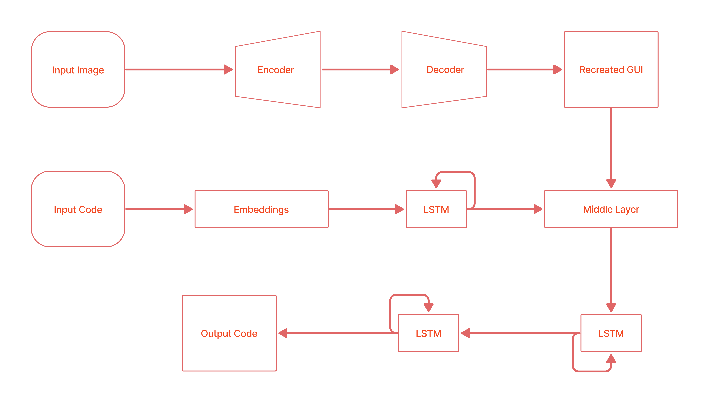

Taneem Jan
Hello! 👋
I'm a graduate student at University of Engineering and Technology Peshawar majoring in Computer Science and Artificial Intelligence. I mostly study, doing research and work on neural networks and computer vision in one of the AI Labs under the supervision of Dr. Zakira Inayat to make machines able to see and learn.
Other than studying at the university, previously I've worked as an Intern Machine Learning Engineer at a German company NAECO Blue GmbH. Where I worked on real time and time series data regarding the solar and wind power plants. During the internship, my job was to find a weather API so that the teams don't need to overlook to any other resources for any kind of data. I talked to different organizations and then tested out their weather APIs for forecast and historical data in terms of annually, monthly, weekly, daily, hourly and minutely data. My testing and analysis models made the company able to decide on APIs, I recommended. The data pipeline I developed for the company, the analytical charts and graphs, they were following to find the best spatial and temporal resolution data for a specific location.
Email: 18pwbcs0658@uetpeshawar.edu.pk
Recent News
- Aug 2021: Started an internship with NAECO Blue GmbH.
- Dec 2021: Defended the undergrad research proposal and started working on thesis.
- Aug 2022: Completed undergraduate research thesis and coursework.
- Sep 2022: Graduated from UET Peshawar.
Research Interests
I am interested in image processing, code generation and model optimization. Much of my work and studies revolve around detection, classification, generation from images. The intersection between natural language processing and computer vision is where I always inclined towards. Drop me an email if want to work together.
Projects Highlights
|  |
HTML Code Generation from Images with Deep
Neural
Networks
Undergrad Research Thesis, University
Using the image captioning technique to convert images to words or ebeddings and
sentences with the use of deep neural networks. Scanning and featuring images with
Convolutional Auto-Encoders, to encode and decode the inner features of an image, the
using those features to generate HTML codes with the sequential Recurrent Networks. The
results achived are higher and more accurate than the paper originally published with
77%.
Taneem Ullah Jan, Dr. Zakira Inayat
|
|
LaTeX Formula Code Generation from
Images
Ongoing Research Project, Personal
Combining both computer vision and NLP tasks to generate mathematical formulae from
images. The convolutional encoder captures and extracts inner features from images. LSTM
based decoder then tries to generate the LaTeX code from the passed token vectors.
Trying to achieve the results for a machine which at a time can see and speak, towards
generalisation.
Taneem Ullah Jan
|
|

|
Student Attendance System through Face
Recognition
Personal Project
Capturing the image streams from a website through Flask API, and in the backend using
computer vision and convolutional neural network to detect faces within the stream and
classifying them accordingly to mark attendance of students..
Taneem Ullah Jan, Mohammad Usman
|